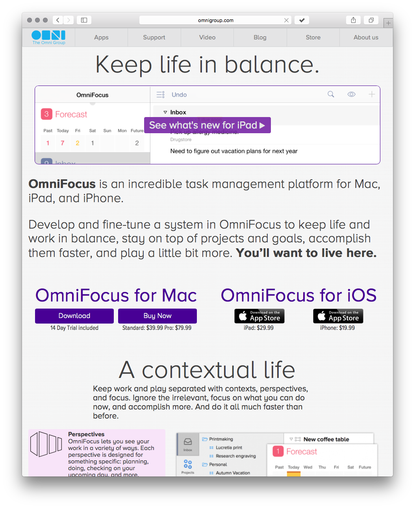
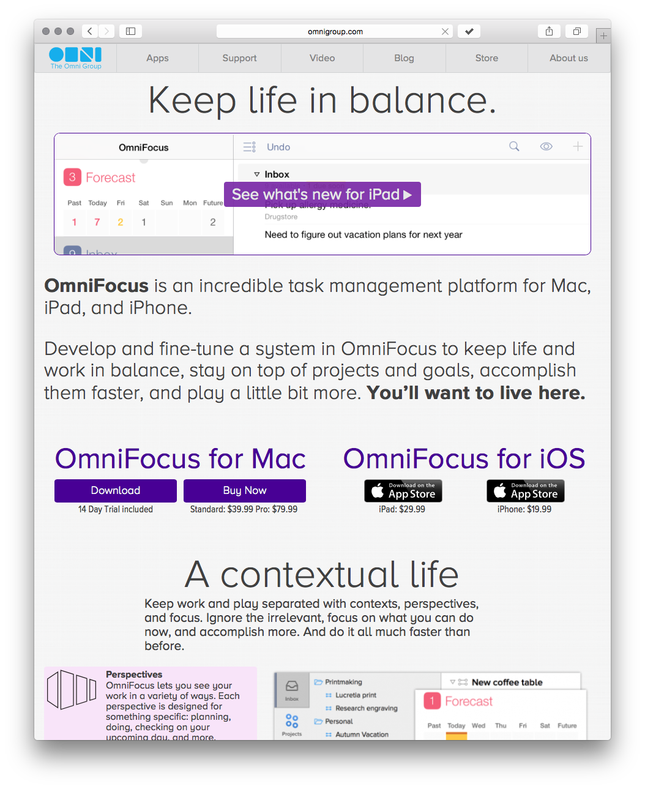

The Unofficial OmniFocus Safari Extension
Remembering a webpage has never been easier.


The Unofficial OmniFocus Safari Extension is only available for Safari on OSX.
But you can click here to create a reminder in OmniFocus to download it once you get back to your Mac.
But you can click here to create a reminder in OmniFocus to download it once you get back to your Mac.
The Unofficial OmniFocus Safari Extension is only available for Safari on OSX.